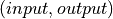
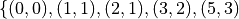
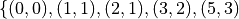

Formal Verification of Imperative Programs¶
In this chapter, we first elaborate on the idea that pure functional programming make for mathematically clear but potentially inefficient specifications, while imperative code makes for efficient code but is hardly clear as to its purpose, and is thus hard to reason about. To get the benefits of both, we use functional programming to write key parts of specifications for imperative code, and then we use tools or manual methods to prove that the imperative code does what such a speification requires.
Performance vs. Understandability¶
To get a clearer sense of the potential differences in performance between a pure functional program and an imperative program that compute the same function, and tradeoffs one makes between clarity of intent and execution speed, consider our recursive definition of the Fibonacci function.
We start off knowing that if the argument to the function, n, is 0
or 1, the value of the function for that n is just n itself. In
other words, the sequence, fib(i) of Fibonacci numbers indexed by
i, starts with, ![[0, 1, \ldots ]](_images/math/d6d348c9fec97ea8bbe7cf69259bfbeda3f0a86d.png) . For any n >= 2, fib(n),
is the sum of the previous two values. To compute the n’th (n >= 2)
Fibonacci number, we can thus start with the first two, sum them up to
get the next one, then iterate this process, computing the next value
on each iteration, until we’ve got the result.
. For any n >= 2, fib(n),
is the sum of the previous two values. To compute the n’th (n >= 2)
Fibonacci number, we can thus start with the first two, sum them up to
get the next one, then iterate this process, computing the next value
on each iteration, until we’ve got the result.
Footnote: by convention we index sequences starting at zero rather than one. The first element in such a sequence thus has index 0, the second has index 1, and the n’th has index n - 1. For example, fib(6) refers to the 7th Fibonacci number. You should get used to thinking in terms of zero-indexed sequences.
Now consider our recursive definition, fib(n). It’s pure math: concise, precise, elegant. And because we’ve written it in a functional language, we can even run it. However, it might not give us the performance we require. An imperative program, by constrast, is code. It’s cryptic but it can be very efficient when run.
To get a sense of performance differences, consider the evaluation of each of two programs to compute fib(5): our functional program and an imperative one that we will develop in this chapter.
Consider the imperative program. If the argument, n, is either zero or one, the answer is just returned. If n >= 2 an answer has to be computed. In this case, the program will repeatedly add together the previous two values of the function, starting with 0 and 1, until it computes the result for n. The program returns that value.
For a given value of n, what is the cost of computing an answer? The cost will be dominated by the work done inside the loop body; and on each iteration of the loop, a fixed amount of work is done; so it’s not a bad idea to use the number of loop body executions as a measure of the cost of computing an answer for an argument, n.
So, what does it cost to compute fib(5)? Well, we need to execute the loop body to compute fib(i) for values of i of 2, 3, 4, and 5. It thus takes 4 loop body iterations to compute fib(5). To compute the 10th element requires that the loop body execute for i in the range of [2, 3, …, 10]. That’s nine iterations. It’s easy to see that for any value of n, the cost to compute fib(n) will be n-1 loop body iterations. We can compute the 100,000th Fibonacci number by running a simple loop body about that many times. On a modern computer, the computation will be completed very quickly.
The functional program, on the other hand, is evaluated by repeated evaluation of nested recursive function applications until base cases are reached. Let’s think about the cost of evaluation for increasing values of n and try to see a pattern. We’ll measure computational complexity now in terms of the number of function evaluations (rather than loop bodies executed) required to produce a final answer.
To compute fib(0) or fib(1) requires just 1 function evaluation
(the first and only call to the function), as these are base cases
requiring no further recursion. To compute fib(2) however requires
3 evalations of fib: one for each of fib(1) and fib(0) plus
the evaluation of the top-level function. The relationship between n
and the number of function evaluations currently looks like this:
 The first element of each pair
is n and the second element is the cost to compute fib(n).
The first element of each pair
is n and the second element is the cost to compute fib(n).
What about when n is 3? Computing this requires answers for
fib(2), which by the resuts we just computed costs 3 evaluations,
and for fib(1), which costs 1, for a total of 5 evaluations
including the top-level evaluation. Computing fib(4) requires that
we compute fib(3) and fib(2), costing 5 + 3, or 8 evaluations,
plus the original, top-level call, for a total of 9. For fib(5) we
need 9 + 5, or 14 plus one more, making 15 evaluations. The
relation of cost to n (the problem size) is now like this: 
In general, the number of evaluations needed to evaluate fib(i+1) is
the sum of the numbers required to evaluate fib(i) plus the number
to evaluate fib(i-1) plus 1. If we use C to represent the cost
function, then we could say,  . This
kind of function is called a recurrence relation, and there are clever
ways to solve such functions to determine what function C may be. Of
course we can also write a recursive function to compute C(n), if
we need only to compute it for relatively small values of n.
. This
kind of function is called a recurrence relation, and there are clever
ways to solve such functions to determine what function C may be. Of
course we can also write a recursive function to compute C(n), if
we need only to compute it for relatively small values of n.
Now that we have the formula, we can quickly compute the costs to compute fib(n) for numerous values of n. The number of evaluations needed to compute fib(6) is 15 + 9 + 1, i.e., 25. For fib(7) it’s 41. For fib(8), *67; for fib(9), 109; for fib(10), 177; and for fib(11), 286 function evaluations.
One thing is clear: The cost to compute the n’th Fibonacci number, as measured by the number of function evaluations, using our beautiful functional program, is growing much more quickly than n itself, and indeed it is growing faster and faster as n increases. We would say the cost is super-linear, whereas with our imperative program, the number of loop body interations grows linearly in n.
How exactly does the cost of the pure functional program compare? One thing to notice is that the cost of computing a Fibonacci element with our functional program is related to the Fibonacci sequence itself! The first two values in the cost sequence are 1 and 1, and each subsequence element is the sum of the previous two plus 1. It’s not exactly the Fibonacci sequence, but it turns out to grow at a very similar rate. The Fibonacci sequence, thus also the cost of computing it recursively, grows at what turns out to be a rate exponential in n, with an exponent of about 1.6. Increasing n by 1 doesn’t just add a little to the cost; it almost doubles it (multiplying it by a factor of 1.6).
No matter how small the exponent (with any exponent greater than one), exponential functions eventually grow very quickly. In the limit, any exponential function grows faster than any polynomial no matter how high in rank it is and no matter how large its coefficients are.
The exponential-in-n cost of our clear but inefficient functional program grows far faster than the cost of our ugly but efficient imperative program as we increase n. For any even modestly large value of n (e.g., greater than 50 or so), it will be impractical to use the pure functional program, whereas the imperative program will reasonably run quickly even on a small personal computer for values of n well into in the millions. What eventually slows it down is not the number of additions that it has to do but the sizes of the numbers that it has to add.
You can already see that the cost to compute fib(n) recursively for values of n larger than just ten or so is much greater than the cost to compute it iteratively. Our mathematical/functional definition is clear (“intellectually tractable”) but inefficient. The imperative program, on the other hand, is efficient, but not at all transparent. We need the latter program for practical computation. But how do we ensure that it implements the same function that we expressed in our elegant mathematical definition?
Specification, Implementation, and Verification¶
We address such problems by combining a few ideas. First, we use logic, including mathematical specifications written in part using functional programming, to express declarative specifications. Such specification precisely define what a given imperative program must compute, and in particular what results it must return as a function of the arguements it receives, without saying how the computation should be done.
We can use functions defined in the pure functional programming style as parts of specifications, e.g., as giving a mathematical definition of the factorial function that an imperative program will then have to implement.
Second, we implement the specified program in an imperative language. Ideally we do so in a way that supports logical reasoning about its behavior. For example, we have to specify not only the relationship between argument and result values that are required, but also how loops are designed to work in our code. We then need to design loops in ways that make it easier to explain, in formal logic, how they do what they are meant to do.
Finally, we use logical proofs to verify that the program satisifies its specification. Later in this course, we’ll see how to create such proofs ourselves. For now we’ll be happy to let Dafny generate them for us mostly automatically!
The rest of this chapter develops these ideas in more depth with concrete examples. First we explain how formal specifications in mathematical logic for imperative programs are often organized. Next we explore how writing imperative programs without the benefits of specification languages and verifications tools can make it hard to spot bugs in code. Next we enhance our implementation of the factorial function with specifications, show how Dafny flags the bug, and fix the program. Doing this requires that we deepen the way we understand loops. We end with a detailed presentation of the verification of an imperative program to compute values in the Fibonacci sequence. Given any natural number n, our program must return the value of fib(n), but it must also do it efficiently. The design and precise, logical description of key properties of a loop is once again the heart of the problem. We will see how Dafny can help us to reason rigorously about loops, and that giving it a little help enables it to reason about them for us.
Declarative Input-Output Specifications¶
First, we use mathematical logic to declaratively specify properties of the behaviors that we require of programs written in imperative languages. For example, we might require that, when given any natural number, n, a program compute and return the value of the factorial of n, the mathematical definition of which we’ve given as fact(n). In general, we want to specify how the results returned by an imperative program relate to the arguments on which it was run. We call such a specification an input-output specification. (Here we ignore side-effect behaviors such as reading from and writing to input and output devices.)
Specifications about required relationships between argument values and return results specify what a program must compute without specifying how it should be done. Specifications are thus abstract: they omit implementation details, leaving it to the programmer to decide how best to refine the specification into efficient code.
For example we might specify that a program (1) must accept any integer valued argument greater than or equal to zero (a piece of a specification that we call a precondition), and (2) that as long as the precondition holds, then it must return the factorial of the given argument value (a postcondition).
Input-Output Relations¶
In purely mathematical terms, a specification of this kind defines a binary relation between argument (input) and return (output) values, and imposes on the program a requirement that whenever it is given the first value in such an input-output pair, it must compute a second (output) value so that the pair, , is in the specified relation.
Relations and Functions¶
A binary relation in ordinary mathematics is just a set of pairs of values. A function is a binary relation with at most one pair with a given first value. A function is a single-valued relation. What we often need to specify, in particular, is an input-output function.
For example, pairs in the factorial relation include  and
and  , but not the pair
, but not the pair
 . Some of the pairs in the Fibonacci relation include
 and (6,5). These
relations are also functions because there is at most one pair
with a given first element. Finally, these functions are also said to
be total because for every natural number, there is a pair with
that number as its first element.
. Some of the pairs in the Fibonacci relation include
 and (6,5). These
relations are also functions because there is at most one pair
with a given first element. Finally, these functions are also said to
be total because for every natural number, there is a pair with
that number as its first element.
On the other hand, square root is a relation, a set of pairs of real
numbers, but not a function, because it is not singled valued. Both
of the pairs,  and
and  , which are distinct but
have same first element, are in the relation. That is so because both
2 and -2 are square roots of 4.
, which are distinct but
have same first element, are in the relation. That is so because both
2 and -2 are square roots of 4.
Total and Partial Functions¶
We also note that the square root relation on the real numbers is what we call partial rather than total: in that it is not defined for some real numbers. In particular, it is not defined for (i.e., it does not have any pairs where the first element is) any negative real number.
Turning Partial Functions into Total Functions¶
Partial functions and non-function relations both present problems for programmers. Let’s first consider relations that sometimes have more than one value of a given type for a given argument. What value should a program return?
The square root function is a good example. Given a positive argument there will be two square roots, one positive and one negative. If the function is require to return a single number as an answer, which one should it return?
There is really no good answer. Rather, the solution is usually to change the program specification slightly. For example, rather than promising to return the square root (a concept that is not well defined when there are two square roots for the same number) such a program might promise to return the non-negative square root, of which there is always just one (given a non-negative argument. What we have done here is to implement a different relation, and one that is now also a function.
A different way to re-formulate the square root relation as a
function would be to view it as returning a single set of values
as a result: a set containing all of the square roots of a given
argument. The pair  is in this relation, for
example, and the relation is also a function in that there is only one
such pair with any given first element.
is in this relation, for
example, and the relation is also a function in that there is only one
such pair with any given first element.
So far we have dealt with the situation where a relation holds more than one result for a given argument. The other difficult situation occurs when there is no result or a given argument, i.e., when the function or relation is undefined for some argument values. What should a program return then?
Once again, there’s no good answer. Rather, we generally tweak the specification to require the implementation of a slightly different relation. One approach would be to narrow the domain of values that the program can take to the domain on which the actual mathematical function is defined. So instead of specifying a square root function as taking any real number, we could speficy that it requires that an argument value be non-negative. When we add such a precondition to a method or function specification in Dafny, the effect is that Dafny checks every place in the code where the method or function is called to verify that the argument values satisfy that pre-condition.
Alternately, we might “tweak” the type of the return value, so that the program can return some value of the promised type, even if the underlying mathematical function is not defined for the arguments. So, for example, if instead of promising to return a single number as a square root we promise to return a set of numbers, then in cases where the function is undefined, we just return the empty set of numbers. In this case, the empty set as a return value can be interpreted as signifying that no numerical answer could be returned.
Finally, in languages such as Java and Python, when a program encounters a state where a valid value cannot be computed and returned, it can invoke an error handling routine to take some kind of “exceptional” action. This is the purpose of exceptions in Java, Python, etc. We will not entertain the use of exceptions in this course.
Imperative Implementation¶
Having written a formal specification of the required input-output behavior of a program, we next write imperative code in a manner, and in a language, that supports the use of formal logic to reason about whether the program refines (implements) its formal specification. One can use formal specifications when programming in any language, but it helps greatly if the language has strong, static type checking. It is even better if the language supports formal specification and logical reasoning mechanisms right alongside of its imperative and functional programming capabilities. Dafny is such a language and system. It is not just a language, but a verifier.
In addition to choosing a language with features that help to support formal reasoning, we sometimes also aim to write imperative code in a way that makes it easier to reason about formally. As we’ll see below, for example, the way that we write our while loops can make it easier or harder to reason about their correctness. Even whether we iterate from zero up to n or from n down to zero can affect the difficulty of writing specification elements for a program.
Formal Verification¶
The aim of formal verification is to deduce (to use deductive logic to prove) that, as written, a program satisfies its specification. In more detail, if we’re given a program, C with a precondition, P, and a postcondition Q, we want a proof that verifies that if C is started in a state that satisfies P and if it terminates (doesn’t go into an infinite loop), that it ends in a state that satisfies Q. We call this property partial correctness.
We write the proposition that C is partially correct (that if it’s
started in a state that satisfies the assertion, P, and that if it
terminates, then it will do so in a state that satisfies assertion
Q) as  This is a so-called Hoare triple, named
after the famous computer scientist, Sir Anthony (Tony) Hoare. It is
nothing other than a proposition that claims that C satisfies its
pre-condition/post-condition specification. Another way to read it
is as saying that the combination of the pre-condition being satisfied
and the the program being run implies that the post-condition will be
satisfied.
This is a so-called Hoare triple, named
after the famous computer scientist, Sir Anthony (Tony) Hoare. It is
nothing other than a proposition that claims that C satisfies its
pre-condition/post-condition specification. Another way to read it
is as saying that the combination of the pre-condition being satisfied
and the the program being run implies that the post-condition will be
satisfied.
In addition to a proof of partial correctness, we usually do want to
know that a program also does always terminate. When we have a proof
of both  and that the program always terminates,
then we have a proof of total correctness. Dafny is a programming
system that allows us to specify P and Q and it then formally, and
to a considerable extent automatically, verifies both P { C } Q
and termination. That is, Dafny produces proofs of total correctness.
and that the program always terminates,
then we have a proof of total correctness. Dafny is a programming
system that allows us to specify P and Q and it then formally, and
to a considerable extent automatically, verifies both P { C } Q
and termination. That is, Dafny produces proofs of total correctness.
It is important to bear in mind that a proof that a program refines (implements) its formal specification does not necessarily mean that it is fit for its intended purpose! If the specification is wrong, then all bets are off, even if the program is correct relative to its specification. The problem of validating specification againts real-world needs is separate from that of verifying that a given program implements its specification correctly. Formal methods can help here, as well, by verifying that specifications have certain desired properties, but formal validation of specifications is not our main concern at the moment.
Case Study: The Factorial Function¶
So far the material in this chapter has been pretty abstract. Now we’ll see what it means in practice.
A Buggy Implementation¶
To start, let’s consider an ordinary imperative program, as you might have written in Python or Java, for computing values of the factorial function. The name of the function is the only indication here of the intended behavior of this program. There is no clear specification.
The program takes an argument of type nat (which guarantees that the argument has the property of being non-negative). It then returns a nat which the programmer implicitly claims (given the function name) is the factorial of the argument.
method factorial(n: nat) returns (f: nat)
{
if (n == 0)
{
return 1;
}
var t: nat := n;
var a: nat := 1;
while (t != 0)
{
a := a * n;
t := t - 1;
}
f := a;
}
It’s not immediately obvious whether this code is correct or not, relative to what we know it’s meant to do. Sadly, this program also contains a bug. Try to find it. Reason about the behavior of the program when the argument is 0, 1, 2, 3, etc. Does it always compute the right result? Where is the bug? What is wrong? And how could this logical error have been detected automatically?
Specifications Establish Correctness Criteria¶
A key problem is that the program lacks a precise specification. The program does something, taking a nat and possibly returning a nat (unless it goes into an infinite loop) but there’s no way to analyze its correctness in the absence of a specification that defines what it even means to be correct.
Now let’s see what happens when we add a formal specification. Look at the following code block. That n >= 0 continues to be expressed by the type of the argument, n, being nat. However, we have now added a postcondition that ensures that the return result will be the factorial of n as defined by our functional program! What we assert is that the result produced by our imperative code is the same result that would have been produced if we had run the functional program.
method factorial(n: nat) returns (f: nat)
ensures f == fact(n)
{
if (n == 0)
{
return 1;
}
var t := n;
var a := 1;
while (t != 0)
{
a := a * n;
t := t - 1;
}
return a;
}
With a specification in place, Dafny now reports that it cannot guarantee—formally prove to itself—that the postcondition is guaranteed to hold. Generating proofs is hard, not only for people but also for machines. In fact, one of seminal results of 20th century mathematical logic was to prove that there is no general-purpose algorithm for proving propositions in mathematical logic. That’s good news for mathematicians! If this weren’t true, we wouldn’t need them!
So, the best that a machine can do is to try to find a proof for any given proposition. Sometimes proofs are easy to generate. For example, it’s easy to prove 1 = 1 by the reflexive propery of equality. Other propositions can be hard to prove. Proving that programs in imperative languages satisfy declarative specifications can be hard.
When Dafny fails to verify a program (find a proof that it satisfies its specification), there is one of two reasons. Either the program really does fail to satisfy its specification; or the program is good but Dafny does not have enough information to know how to prove it.
With the preceding program, the postcondition really isn’t satisfied due to the bug in the program. When Dafny fails to verify, it gives us a strong reason to double-check our code to be sure we have not made some kind of mistake in reasoning.
But even if the program were correct, Dafny would still need a little more than is given here to prove it. In particular, Dafny would need a litte more information about how the while loop behaves. It turns out that providing such extra information about while loops is where much of the difficulty lies.
A Verified Implementation of the Factorial Function¶
Here, then, is a verified imperative program for computing factorial. We start by documenting the overall program specification. The key element here is the ensures clause. This clause links our imperative program with our functional specification and tells Dafny to make sure that the reuqired relationship holds.
method verified_factorial(n: nat) returns (f: nat)
ensures f == fact(n)
Now for the body of the method. First, if we’re looking at the case where n==0 we just return the right answer immediately. There is no need for any further computation.
if (n == 0)
{
return 1;
}
The rest of the code handles the case where n > 1. At this point in the program execution, we believe that n must be greater than zero. We would have just returned if it were zero, and it can’t be negative because its type is nat. We can nevertheless formally assert (write a proposition about the state of the program) that n is greater than zero. Dafny will try to (and here will successfully) verify that the assertion is true at this point in the program, no matter what path through conditionals, while loops, commands led to this point in the program.
assert n > 0;
To compute an answer for the non-zero input case, we will use a loop. We can do this by using a variable, a, to hold a “partial factorial value” in the form of a product of the numbers from n down to a loop index, “i,” that we start at n and decrement, terminating the loop when n==0.
At each point just before, during, and right after the loop, a is a product of the numbers from n down to but not including i, and the value of i represents how much product-computing work remains to be done. So, for example, if we’re computing factorial(10) and a holds the value 10 * 9, then i must be 8 because multiplying a by the factors from 8 to 1 remains to be done.
A critical “invariant” then is that if you multiply a by the factorial of i you get the the factorial of n. When we say that this is an invariant, we mean that it holds before and also after any execution of the loop body, but not necessarily within the loop body. In particular, when i gets down to 0, this relation means that a must contain the final result, because a * fact(0) will then equal fact(n) and fact(0) is just 1, so a must equal fact(n).
This is how we design loops so that we can be confident that they do what we want tem to do. So now let’s go through the steps required to implement our looping strategy.
Step 1. Set up state for the loop to work. We first initializie a := 1 and i := n.
var i: nat := n; // nat type of i explicit
var a := 1; // can let Dafny infer it
It would now be a good idea to ask Dafny to check that the invariant holds. See the next bit of code, below. Note that we are again using our pure functional definition, fact, as a specification of the function we’re implementing.
In Dafny, we can use matnematical logic to express what must be true at any given point in the execution of a program in the form of an “assertion.” Here we assert that our loop invariant holds. The Dafny verifier tries to prove that the assertion is a true propsition about the state of the program when control reaches this point, no matter what path might have been taken to arrive at this point.
assert a * fact(i) == fact(n); // "invariant"
Step 2: Now we write the actual loop command. Recall how a while loop works. To evaluate a loop, one evaluates the loop condition. If the result is false, the loop body does not execute and the loop terminates. Otherwise, the loop body is executed once and then the whole loop is run again (starting with a new evaluation of the loop condition).
We want our loop body to run at least once, as we already handled the case where it doesn’t need to run at all. It will run if i > 0. What is i? We initialized it to n and haven’t change it since then so it must still be equal to n. Do we know that n is greater than 0? We do, because (1) it can’t be negative owning to its type, and (2) it can’t be 0 because if it were 0 the program would already have returned.
We can now do better than just reasoning in our heads. We can also use logic to express what we believe to be true and let Dafny try to check it for us automatically.
assert i > 0;
Now if i is one, then the loop body will run once. The value of a, which starts at 1, will be multiplied by i, which is 1, then i will be decremented, taking the the value 0. The loop will be run again, but the loop condition will be found to be false, and to the loop body will not be executed and the loop will terminate. When it does, it will leave a with the value 1, which is the right answer.
while (i > 0)
invariant 0 <= i <= n
invariant fact(n) == a * fact(i)
{
a := a * i;
i := i - 1;
}
If i is greater than 1, the loop body will execute, multiplying a by the current value of i and i will be decremented. The vaue of a will be the partial value of the factorial computed so far, and the value of i will represent the work that remains to be done. When i reaches zero, all the work will be done, and a will contain the final result.
However, Dafny cannot determine on its own that this will be the case. What it needs to know to reason “mechanically” about the program is a bit of additional information about what remains true no matter how many times the loop body executes (zero or more). That information is expressed in the loop invariants. The first one is true but not of much use. The second one is the key to enabling Dafny to verify that after the loop, a == fact(n).
The invariant itself just says that at all points before and after the loop body executes, that partial factorial value computed so far times the factorial of i (which remains to be computed) is the answer that we seek. Once the loop is done we (and Dafny) also know that i == 0. It is the combination of the invariant and this fact that enables Dafny to see that it must be the case that a == fact(n).
We can verify by using asserts after the loop that our beliefs about what the state of the program must be are correct. First, let’s have Dafny check that the loop condition is now false.
assert !(i > 0);
We can also have Dafny check that our loop invariant still holds.
assert a * fact(i) == fact(n);
And now comes the most crucial step of all in our reasoning. We can deduce that a now holds the correct answer. That this is so follows from the conjunction of the two assertions we just made. First, that i is not greater than 0 and given that its type is nat, the only possible value it can have now is 0. That’s what we’d expect, as it is the condition on which the loop terminates (which it just did). But better than just saying all of this, let us also formalize, document, and check it using the Dafny verifier.
assert i == 0;
Now it’s easy to see. No matter what value i has, we know that the
loop invariant holds:  and we also know
that i == 0. So it must be that
and we also know
that i == 0. So it must be that  And
fact(0) is 1 (from its mathematical definition). So it must be that
a == fact(n). And Dafny confirms it!
And
fact(0) is 1 (from its mathematical definition). So it must be that
a == fact(n). And Dafny confirms it!
assert a == fact(n);
We thus have the answer we need to return. Dafny verifies that our program satisfies its formal specification. We no longer have to pray. We know that our program is right and Dafny confirms our belief.
return a;
Mathematical logic is to software as the calculus is to physics and engineering. It’s not just an academic curiosity. It is a critical intellectual tool, inceasingly used for precise specification and semi-automated reasoning about and verification of real programs.
Case Study: The Fibonacci Function¶
Similarly, here is a verified imperative implementation of the Fibonacci function. We start by adding a specification in the form of an ensures clause, appealing to our functional program, to tell Dafny what the imperative program must compute.
method fibonacci(n: nat) returns (r: nat)
ensures r == fib(n)
Now for the body. First we represent values for the two cases where the result requires no further computation. Initially, fib0 will store the value of fib(0), namely 0, and fib1 will store the value of fib(1), namely 1.
var fib0, fib1 := 0, 1; //parallel assignment
Next, we test to see if either of these cases applies, and if so we just return the appropriate result.
if (n == 0) { return fib0; }
if (n == 1) { return fib1; }
At this point, we know something more about the state of the program than was the case when we started. We can deduce that n has to be greater than or equal to 2. This is because it initially had to be greater than or equal to zero due to its type, and we would already have returned if it were 0 or 1. It must now be 2 or greater. We can assert this proposition about the state of the program at this point, and Dafny will verify it for us.
assert n >= 2;
So now we have to deal with the case where n >= 2. Our strategy for computing fib(n) in this case is, again, to use a while loop. We will establish a loop index i. Our design will be based on the idea that at the beginning and end of each loop iteration (we are currently at the beginning), we will have already computed fib(i) and that its value is in fib1. We’ve already assigned the value of fib(0) to fib0, and fib(1) to fib1, so to set up the desired state, we initialize i to be 1.
var i := 1;
We can now assert and Dafny can verify a number of conditions that we expect and require to hold. First, fib1 equals fib(i). To compute the next (i+1st) Fibonacci number, we need not only the value of fib(i) but also fib(i-1). We will thus also want fib0 to hold this value at the start and end of each loop iteration. Indeed we do have this state of affairs right now.
assert fib1 == fib(i);
assert fib0 == fib(i-1);
To compute fib(n) for any n greater than or equal to 2 will require at least one execution of the loop body. We’ll thus set our loop condition to be i < n. This ensures that the loop body will run at least once, to compute fib(2), as i is 1 and n is at least 2; so the loop condition i < n is true, which dictates that the loop body must be evaluated at least once.
Within the loop body we’ll compute fib(i+1) (we call it fib2) by adding together fib0 and fib1; then we increment i; then we update fib0 and fib1 so that for the new value of i they hold fib(i-1) and fib(i). To do this we assign the initial value of fib1 to fib0 and the value of fib2 to fib1. Think hard so as to confirm for yourself that this sequence of actions re-establishes the loop invariant.
Let’s work an example. Suppose n happens to be 2. The loop body will run, and after the one execution, i will have the value, 2; fib1 will have the value of fib(2), and fib0 will have the value of fib(1). Because i is now 2 and n is 2, the loop condition will now be false and the loop will terminate. The value of fib1 will of course be fib(i) but now we also have the negation of the loop condition, i.e., i == n. So fib(i) will be fib(n), which is the result we want and that we return.
We can also informally prove to ourself that this strategy gives us a program that always terminates and returns a value. That is, it does not go into an infinite loop. To see this, note that the value of i is initally less than or equal to n, and it increases by only 1 on each time through the loop. The value of n is finite, so the value of i will eventually equal the value of n at which point the loop condition will be falsified and the looping will end.
What Dafny looks for to verify that a given loop terminates is a value that decreases each time the loop runs and that is bounded below so that it cannot decrease forever. As i increases in this loop, it can not be the decreasing quantity. What Dafny takes instead is n - i. When i is 0 this value is large, and as i gets closer to n it decreases until when i == n, the difference is zero, and that is the bound at which the loop terminates.
That’s our strategy. Here’s the while loop that we have designed. Now for the first time, we see something crucial. In general, Dafny has no idea how many times a loop body will execute. Intead, what it needs to know are properties of the state of the program that hold no matter how many times the loop executes, that, when combined with the fact that the has terminated allows one to conclude that the loop does what it’s meant to do. We call such properties loop invariants.
while (i < n)
invariant i <= n;
invariant fib0 == fib(i-1);
invariant fib1 == fib(i);
{
var fib2 := fib0 + fib1;
fib0 := fib1;
fib1 := fib2;
i := i + 1;
}
The invariants are just the conditions that we required to hold for our design of the loop to work. First, i must never exceed n. If it did, the loop would spin off into infinity. Second, to compute the next (the i+1st) Fibonacci number we have to have the previous two in memory. So fib0 better hold fib(i-1) and fib1, fib(i). Note that these conditions do not have to hold at all times within the execution of the loop body, where things are being updated, but they do have to hold before before and after each execution.
The body of the loop is just as we described it above. We can use our minds to deduce that if the invariants hold before each loop body runs (and they do), then they will also hold after it runs. We can also see that after the loop terminates, it must be that i==n, because we know that it’s always true that i <= n and the loop condition must now be false, which is to say that i can no longer be strictly less than n, so i must now equal n. Logic says so.
What is amazing is that we can write these assertions in Dafny if we wish to, and Dafny will verify that they are true statements about the state of the program after the loop has run. We have proved (or rather Dafny has proved) that our loop always terminates with the right answer. We have a formal proof of total correctness for this program.
assert i <= n; // invariant
assert !(i < n); // loop condition is false
assert (i <= n) && !(i < n) ==> (i == n);
assert i == n; // deductive conclusion
assert fib1 == fib(i); // invariant
assert fib1 == fib(i) && (i==n) ==> fib1 == fib(n);
assert fib1 == fib(n);
return fib1;
What is Dafny, Again?¶
Dafny is a cutting-edge software language and toolset for verification of imperative code. It was developed at Microsoft Research—one of the top computer science research labs in the world. We are exploring Dafny and the ideas underlying it in the first part of this course to give a sense of why it’s vital for a computer scientist today to have a substantial understanding of logic and proofs along with the ability to code.
Tools such as TLA+, Dafny, and others of this variety give us a way both to express formal specifications and imperative code in a unified way (albeit in different sub-languages), and to have some automated checking done in an attempt to verify that code satisfies its spec.
We say attempt here, because in general verifying the consistency of code and a specification is a literally unsolvable problem. In cases that arise in practice, much can often be done. It’s not always easy, but if one requires ultra-high assurance of the consistency of code and specification, then there is no choice but to employ the kinds of formal methods introduced here.
To understand how to use such state-of-the-art software development tools and methods, one must understand not only the language of code, but also the languages of mathematical logic, including set and type theory. One must also understand precisely what it means to prove that a program satisfies its specification. And for that, one must develop a sense for propositions and proofs: what they are and how they are built and evaluated.
The well educated computer scientist and the professional software engineer must understand logic and proofs as well as coding, and how they work together to help build trustworthy systems. Herein lies the deep relevance of logic and proofs, which might otherwise seem like little more than abstract nonsense and a distraction from the task of learning how to program.